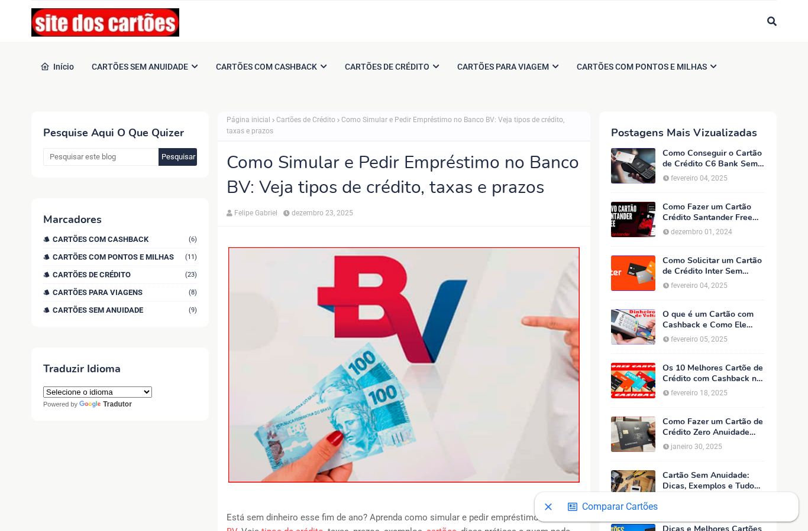

Sistema de Investigação de Marca e Identidade Online
https://www.sitedoscartoes.com.br/2025/12/como-simular-e-pedir-emprestimo-no.html
Prioridade: HIGH · Cenário: B_AMBIGUOUS_COMMUNICATION · Revisão humana: PENDING
Página enquadrada na Triagem de Escopo como FORA DO ESCOPO (blog de notícias/educação financeira e dicas ao consumidor). O domínio sitedoscartoes.com.br não atua como estabelecimento comercial intermediador ou correspondente bancário (COBAN), mantendo conteúdo puramente informativo com redirecionamento instrucional ao site oficial da instituição financeira. Embora ilustre a matéria com a marca legada, trata-se de uso jornalístico/editorial. [Revisor: DOWNGRADE] A página analisada pertence ao 'Site dos Cartões', um blog informativo/editorial focado em dicas de crédito e finanças. Conforme as diretrizes de triagem, portais de conteúdo, notícias e educação financeira que não atuam como estabelecimentos comerciais intermediadores (COBANs, lojas de veículos ou energia solar) devem ser desqualificados (DOWNGRADE) para NO_INDICATION com prioridade LOW.

| Ref | Tipo | Local | Conteúdo |
|---|---|---|---|
| E-URL | domain | url | URL final: https://www.sitedoscartoes.com.br/2025/12/como-simular-e-pedir-emprestimo-no.html (domínio: www.sitedoscartoes.com.br) |
| E-DISC-001 | text | search_index | Índice de busca (lens): Como Simular e Pedir Empréstimo no Banco BV: Veja tipos de ... — Imagem visualmente semelhante ao logotipo antigo (fonte: Site dos Cartões) |
| E-SHOT-VIEWPORT | screenshot | viewport | evidence/Cffe1edca32/attempt-2/viewport.png (sha256 4457dd917931b4ae…) |
| E-SHOT-FULL | screenshot | page | evidence/Cffe1edca32/attempt-2/fullpage.png (sha256 8821b3920b7b3864…) |
| E-TITLE | title | head | Como Simular e Pedir Empréstimo no Banco BV: Veja tipos de crédito, taxas e prazos |
| E-META-1 | meta | head | description: banco bv banco votorantin, empréstimo no banco bv, como fazer empréstimo no banco BV, empréstimo com garantia de veículo, empréstimo consignado, |
| E-META-2 | meta | head | og:site_name: Site dos Cartões |
| E-META-3 | meta | head | og:title: Como Simular e Pedir Empréstimo no Banco BV: Veja tipos de crédito, taxas e prazos |
| E-META-4 | meta | head | og:description: banco bv banco votorantin, empréstimo no banco bv, como fazer empréstimo no banco BV, empréstimo com garantia de veículo, empréstimo consignado, |
| E-CANONICAL | meta | head | https://www.sitedoscartoes.com.br/2025/12/como-simular-e-pedir-emprestimo-no.html |
| E-HEAD-1 | heading | page | Pesquise Aqui O Que Quizer |
| E-HEAD-2 | heading | page | Marcadores |
| E-HEAD-3 | heading | page | Traduzir Idioma |
| E-HEAD-4 | heading | page | Como Simular e Pedir Empréstimo no Banco BV: Veja tipos de crédito, taxas e prazos |
| E-HEAD-5 | heading | page | Tipos de empréstimos disponíveis no Banco BV |
| E-HEAD-6 | heading | page | Empréstimo pessoal Banco BV |
| E-HEAD-7 | heading | page | Como funciona, basicamente? |
| E-HEAD-8 | heading | page | Para quem esse empréstimo é ideal? |
| E-HEAD-9 | heading | page | Taxas e prazos |
| E-HEAD-10 | heading | page | Empréstimo com garantia de veículo Banco BV |
| E-HEAD-11 | heading | page | Como funciona? |
| E-HEAD-12 | heading | page | Para quem faz sentido? |
| E-HEAD-13 | heading | page | Vantagens claras |
| E-HEAD-14 | heading | page | Descobrir mais Comparar Cartões Cartão de Crédito CARTÕES DE CRÉDITO Financiamento de veículos Banco BV |
| E-HEAD-15 | heading | page | Como funciona? |
| E-FOLD | text | viewport (acima da dobra) | Início CARTÕES SEM ANUIDADE CARTÕES COM CASHBACK CARTÕES DE CRÉDITO CARTÕES PARA VIAGEM CARTÕES COM PONTOS E MILHAS Pesquise Aqui o Que Quizer Marcadores Cartões com Cashback (6) Cartões com Pontos e Milhas (11) Cartões de Crédito (23) Cartões para Viagens (8) Cartões Sem Anuidade (9) Traduzir Idioma Powered by Tradutor Página inicial Cartões de Crédito Como Simular e Pedir Empréstimo no Banco BV: Veja tipos de crédito, taxas e prazos Como Simular e Pedir Empréstimo no Banco BV: Veja tipos de crédito, taxas e prazos Felipe Gabriel dezembro 23, 2025 Está sem dinheiro esse fim de ano? Aprenda como simular e pedir empréstimo no Banco BV . Veja tipos de crédito , taxas, prazos, exemplos, cartões , dicas práticas e quem pode solicitar. Afinal, o que é o Banco BV e por que ele tem sido a escolha de tantas pessoas? Postagens Mais Vizualizadas Como Conseguir o Cartão de Crédito C6 Bank Sem Pagar Anuidade: Guia Completo e Passo a Passo fevereiro 04, 2025 Como Fazer um Cartão Crédito Santander Free com Anuidade Zero dezembro 01, 2024 Como Solicitar um Cartão de Crédito Inter Sem Anuidade fevereiro 04, 2025 O que é um Cartão com Cashback e Como Ele Funciona? fevereiro 05, 2025 Os 10 Melhores Cartõe de Crédito com Cashback no Brasil em 2025 fevereiro 18, 2025 Como Fazer um Cartão de Crédito Zero Anuidade Itaú Uniclass janeiro 30, 2025 Cartão Sem Anuidade: Dicas, Exemplos e Tudo Que Você Precisa Saber julho 28, 2025 Dicas e Melhores Cartões com Cashback para 2025 |
| E-NAV | nav | header | Página inicial <https://www.sitedoscartoes.com.br/> | Cartões de Crédito <https://www.sitedoscartoes.com.br/search/label/Cart%C3%B5es%20de%20Cr%C3%A9dito?&max-results=5> |
| E-CTA-1 | cta | page | Pesquisar |
| E-CONTACT-1 | contact | page | <https://www.facebook.com/sharer.php?u=https://www.sitedoscartoes.com.br/2025/12/como-simular-e-pedir-emprestimo-no.html> |
| E-CONTACT-2 | contact | page | <https://web.whatsapp.com/send?text=Como%20Simular%20e%20Pedir%20Empr%C3%A9stimo%20no%20Banco%20BV:%20Veja%20tipos%20de%20cr%C3%A9dito,%20taxas%20e%20prazos%20|%20https://www.sitedoscartoes.com.br/2025/12/como-simular-e-pedir-emprestimo-no.html> |
| E-CONTACT-3 | contact | page | <mailto:?subject=Como%20Simular%20e%20Pedir%20Empr%C3%A9stimo%20no%20Banco%20BV:%20Veja%20tipos%20de%20cr%C3%A9dito,%20taxas%20e%20prazos&body=https://www.sitedoscartoes.com.br/2025/12/como-simular-e-pedir-emprestimo-no.html> |
| E-IMG-1 | image | page (acima da dobra) | imagem alt='Google Tradutor' src=https://www.gstatic.com/images/branding/googlelogo/1x/googlelogo_color_42x16dp.png (40x14, acima da dobra) |
| E-OFFICIAL-LINKS | link | page | Banco BV <https://www.bv.com.br/> | tipos de crédito <https://www.bv.com.br/bv-inspira/emprestimo-com-garantia-de-veiculo/tipos-de-emprestimo> | crédito, empréstimos e financiamento de veículos <https://www.bv.com.br/financiamento/financiamento-de-veiculos> | alívio financeiro <https://www.bv.com.br/renegociacao> | cartão de crédito bem escolhido resolve <https://www.bv.com.br/cartao> | Solicite agora o seu Cartão de Crédito BV Aqui <https://www.bv.com.br/cartao/peca-agora/v3/cartao-bv-livre> |
| E-TXT-001 | text | page | Página inicialCartões de CréditoComo Simular e Pedir Empréstimo no Banco BV: Veja tipos de crédito, taxas e prazos |
| E-TXT-002 | text | page | Como Simular e Pedir Empréstimo no Banco BV: Veja tipos de crédito, taxas e prazos |
| E-TXT-003 | text | page | Está sem dinheiro esse fim de ano? Aprenda como simular e pedir empréstimo no Banco BV. Veja tipos de crédito, taxas, prazos, exemplos, cartões, dicas práticas e quem pode solicitar.Comparar Crédito |
| E-TXT-004 | text | page | Se você chegou até aqui, imagino que esteja passando por aquele momento comum da vida: precisar de dinheiro e querer tomar a melhor decisão possível. Talvez seja para organizar dívidas, resolver um imprevisto ou tirar um plano do papel. Seja qual for o motivo, vamos conversar com calma sobre como simular e pedir empréstimo no Banco BV, sem complicação. |
| E-TXT-005 | text | page | Afinal, o que é o Banco BV e por que ele tem sido a escolha de tantas pessoas? |
| E-TXT-006 | text | page | O Banco BV (Banco Votorantim) é uma instituição sólida e conhecida no Brasil, especialmente quando o assunto é crédito, empréstimos e financiamento de veículos. |
| E-TXT-007 | text | page | Talvez você já tenha passado por isso: entra no site de um banco, vê um monte de números, termos técnicos e sai mais confuso do que entrou. No BV, curiosamente, a proposta é outra. A simulação é simples, direta e feita para pessoas reais, como eu e você.Planos Internet |
| E-TXT-008 | text | page | Tipos de empréstimos disponíveis no Banco BV |
| E-TXT-009 | text | page | Empréstimo pessoal Banco BV |
| E-TXT-010 | text | page | Empréstimo com garantia de veículo Banco BV |
| E-TXT-011 | text | page | Você usa seu carro como garantia, mas continua usando ele normalmente. O veículo fica alienado ao banco até o fim do pagamento. |
| E-TXT-012 | text | page | Financiamento de veículos Banco BV |
| E-TXT-013 | text | page | O BV é referência quando o assunto é financiamento. |
| E-TXT-014 | text | page | Empréstimo consignado Banco BV |
| E-TXT-015 | text | page | Porque a parcela é descontada direto da folha ou benefício. Isso reduz o risco para o banco. |
| E-TXT-016 | text | page | Cartões de crédito do Banco BV |
| E-TXT-017 | text | page | Tipos de cartões BV |
| E-TXT-018 | text | page | Cartão BV com cashback |
| E-TXT-019 | text | page | Solicite agora o seu Cartão de Crédito BV Aqui |
| E-TXT-020 | text | page | Como fazer uma simulação de empréstimo no Banco BV: veja o tutorial completo. |
| E-TXT-021 | text | page | Passo 1: Acesse o site oficial do Banco BV |
| E-TXT-022 | text | page | Como pedir empréstimo no Banco BV |
| E-TXT-023 | text | page | Perguntas e respostas sobre empréstimo no Banco BV |
| E-TXT-024 | text | page | O Banco BV é confiável? |
| E-TXT-025 | text | page | Sim. É um banco tradicional e regulamentado. |
| E-TXT-026 | text | page | Para quem o empréstimo do Banco BV realmente serve? |
| E-TXT-027 | text | page | Prefere um banco confiável |
| E-TXT-028 | text | page | Falar de empréstimo não precisa ser um bicho de sete cabeças. O Banco BV oferece opções claras, simulação fácil e diferentes tipos de crédito para cada momento da vida. |
| E-TXT-029 | text | page | Como Solicitar Empréstimo no Banco do Brasil? |
| E-TXT-030 | text | page | Como Solicitar Empréstimo no Banco do Brasil? |
| E-TXT-031 | text | page | leitores. Este blog foi criado com o objetivo de fornecer informações úteis e atualizadas sobre cartões de crédito, débito e pré-pagos. Os dados apresentados são baseados em pesquisas recentes e podem variar conforme a instituição financeira e a região. Recomendamos sempre a leitura atenta dos termos e condições dos serviços mencionados. Se necessário, consulte um especialista financeiro antes de |
| Dimensão | Sinal | Achado | Refs |
|---|---|---|---|
| DECLARED_COMMERCIAL_IDENTITY | NEUTRAL | O site se apresenta explicitamente como um blog editorial informativo ('Site dos Cartões') voltado a dicas financeiras e análise de cartões/crédito, e não como correspondente bancário ou agente comercial. | E-META-2 E-TXT-031 |
| LOGO_USAGE | NEUTRAL | A postagem utiliza como imagem ilustrativa editorial a antiga identidade visual da BV (monograma B vermelho sobre V azul), porém em contexto estritamente informativo/editorial de blog. | E-SHOT-VIEWPORT E-SHOT-FULL E-DISC-001 |
| SERVICE_JOURNEY | LEGITIMATE | O artigo instrui expressamente o usuário a acessar o site oficial do Banco BV para simular ou contratar produtos, direcionando links para o domínio oficial bv.com.br. | E-TXT-021 E-OFFICIAL-LINKS |
Página enquadrada na Triagem de Escopo como FORA DO ESCOPO (blog de notícias/educação financeira e dicas ao consumidor). O domínio sitedoscartoes.com.br não atua como estabelecimento comercial intermediador ou correspondente bancário (COBAN), mantendo conteúdo puramente informativo com redirecionamento instrucional ao site oficial da instituição financeira. Embora ilustre a matéria com a marca legada, trata-se de uso jornalístico/editorial.
Nenhum CNPJ ou razão social identificáveis no conteúdo coletado.
| Tipo | Valor | Ref | Contexto |
|---|---|---|---|
| domain | sitedoscartoes.com.br | E-URL | |
| social_profile | https://www.facebook.com/sharer.php?u=https://www.sitedoscartoes.com.br/2025/12/como-simular-e-pedir-emprestimo-no.html | E-CONTACT-1 | |
| trade_name | Site dos Cartões | E-META-2 | |
| <https://web.whatsapp.com/send?text=Como%20Simular%20e%20Pedir%20Empr%C3%A9stimo%20no%20Banco%20BV:%20Veja%20tipos%20de%20cr%C3%A9dito,%20taxas%20e%20prazos%20|%20https://www.sitedoscartoes.com.br/20 | E-CONTACT-2 |
Mapeamento indicativo para apoio à auditoria. Não constitui conclusão regulatória; a decisão definitiva pertence à auditoria.
Fonte: NORMATIVE
Art. 14. O contrato de correspondente deve estabelecer: [...] II - vedação à utilização, pelo contratado, de logomarca ou de outros atributos que sejam similares aos adotados pela instituição contratante em suas agências, postos de atendimento, sítio eletrônico na internet, aplicativo ou outras plataformas de comunicação em rede;
Hipótese: Uso de logomarca, uso excessivo/desproporcional ou de atributos similares aos adotados pela contratante em seus canais. A norma disciplina correspondentes contratados; o responsável não foi identificado como correspondente.
Evidência observada: E-IMG-1
Informação faltante:
Fonte: NORMATIVE
Art. 14. O contrato de correspondente deve estabelecer: [...] III - divulgação ao público, pelo contratado, de sua condição de prestador de serviços à instituição contratante, identificada pelo nome com que é conhecida no mercado, com descrição dos produtos e serviços oferecidos e canais de contato da instituição contratante, inclusive de sua ouvidoria, em local visível, em destaque e em formato legível, por meio de: a) sítio eletrônico do correspondente na internet, acessível na página inicial; b) aplicativo e outras plataformas de comunicação em rede do correspondente; [...]
Hipótese: Divulgação ao público da condição de prestador de serviços/parceria ausente, insuficiente, ambígua ou sem destaque. A norma disciplina correspondentes contratados; o responsável não foi identificado como correspondente.
Evidência observada: E-CONTACT-2 E-FOLD E-TITLE E-TXT-021
Informação faltante:
Fonte: NORMATIVE
Art. 3º O correspondente atua por conta e sob as diretrizes da instituição contratante, que assume inteira responsabilidade pelo atendimento prestado aos clientes e usuários por meio do contratado.
Hipótese: Atendimento ao público prestado por meio do contratado em condições que podem não seguir as diretrizes da contratante. A norma disciplina correspondentes contratados; o responsável não foi identificado como correspondente.
Evidência observada: E-CONTACT-2
Informação faltante:
Se o responsável não for correspondente contratado, os indícios podem caracterizar uso indevido de marca ou fraude, fora do escopo da Res. 4.935: avaliar encaminhamento às áreas jurídica/segurança.
Limitações: requisitos contratuais/internos não fornecidos: mapeamento limitado ao texto normativo
Decisão: DOWNGRADE → NO_INDICATION / LOW
A página analisada pertence ao 'Site dos Cartões', um blog informativo/editorial focado em dicas de crédito e finanças. Conforme as diretrizes de triagem, portais de conteúdo, notícias e educação financeira que não atuam como estabelecimentos comerciais intermediadores (COBANs, lojas de veículos ou energia solar) devem ser desqualificados (DOWNGRADE) para NO_INDICATION com prioridade LOW.
| Tema | Severidade | Questionamento | Refs |
|---|---|---|---|
| Enquadramento como Blog Informativo / Fora de Escopo | HIGH | O site sitedoscartoes.com.br é um blog de educação financeira e notícias sobre cartões de crédito e finanças pessoais, e não um correspondente bancário (COBAN), revenda de veículos ou integrador solar. | E-URL E-META-2 E-FOLD E-TXT-031 |
| Canal de WhatsApp incorretamente apontado | MEDIUM | O link identificado como contato de WhatsApp é na verdade um botão de compartilhamento social do artigo ('web.whatsapp.com/send?text=...'), não um canal de atendimento se passando pelo banco. | E-CONTACT-2 |
| Menção instrucional de oficialidade | HIGH | A expressão 'site oficial' é empregada em tom editorial/educativo orientando o leitor a acessar o portal oficial da instituição ('Passo 1: Acesse o site oficial do Banco BV'), contendo links diretos para o domínio legítimo bv.com.br. | E-TXT-021 E-OFFICIAL-LINKS |
| domain_attribution | MEDIUM | Responsável pela página não identificado; a conclusão sobre a marca não pode ser atribuída a um estabelecimento específico. | E-URL |
| Fonte | Consulta / hipótese | URL original | Título / trecho |
|---|---|---|---|
| lens | https://logospng.org/wp-content/uploads/bv-financeira.png H12-legacy-logo:lens | https://www.sitedoscartoes.com.br/2025/12/como-simular-e-pedir-emprestimo-no.html | Como Simular e Pedir Empréstimo no Banco BV: Veja tipos de ... Imagem visualmente semelhante ao logotipo antigo (fonte: Site dos Cartões) |
Original: https://www.sitedoscartoes.com.br/2025/12/como-simular-e-pedir-emprestimo-no.html
Final: https://www.sitedoscartoes.com.br/2025/12/como-simular-e-pedir-emprestimo-no.html
| Artefato | Caminho | SHA-256 | Bytes |
|---|---|---|---|
| screenshot_viewport | evidence/Cffe1edca32/attempt-2/viewport.png | 4457dd917931b4aeed48ddc14960430cc8eebf5ed6efe8415fc105098ca9e574 | 362721 |
| screenshot_full | evidence/Cffe1edca32/attempt-2/fullpage.png | 8821b3920b7b3864a3b988bc03197ffa54ae300602cd125f90f0f8a81efe01d6 | 1402869 |
| html | evidence/Cffe1edca32/attempt-2/page.html.txt | f11ac945ecf8dd94cd9a82de03f54d3e5d8e25e378185e01f02fc9af25302c5e | 918781 |
| text | evidence/Cffe1edca32/attempt-2/text.txt | 4e9c6bb40636675d9f926c92142f155d46e00dc9f4dfa28e8012a8b56ea42ca1 | 12233 |
| page_data | evidence/Cffe1edca32/attempt-2/page.json | cd5180d7583ceaaf21ecb70d1549fb6d5dc73b3c7307fb276c7af79473ea0d9f | 37450 |
| Quando | De | Para | Nota |
|---|---|---|---|
| 2026-11-25T20:48:31+00:00 | DISCOVERED | QUEUED | prioritised (score 1.0) |
| 2026-11-25T20:55:50+00:00 | QUEUED | COLLECTING | |
| 2026-11-25T20:56:02+00:00 | COLLECTING | COLLECTED | |
| 2026-11-25T20:56:02+00:00 | COLLECTED | ANALYZING | |
| 2026-11-25T20:56:03+00:00 | ANALYZING | COLLECTED | prepare error, retry 1: UnboundLocalError |
| 2026-11-25T20:56:06+00:00 | COLLECTED | ANALYZING | |
| 2026-11-25T20:56:07+00:00 | ANALYZING | COLLECTED | prepare error, retry 2: UnboundLocalError |
| 2026-11-25T20:56:12+00:00 | COLLECTED | ANALYZING | |
| 2026-11-25T20:56:14+00:00 | ANALYZING | FAILED | prepare failed: UnboundLocalError: cannot access local variable 'is_disc' where it is not associated with a value |
| 2026-11-25T20:58:34+00:00 | FAILED | QUEUED | retry requested by operator |
| 2026-11-25T21:02:35+00:00 | QUEUED | COLLECTING | |
| 2026-11-25T21:02:47+00:00 | COLLECTING | COLLECTED | |
| 2026-11-25T21:02:47+00:00 | COLLECTED | ANALYZING | |
| 2026-11-25T21:03:07+00:00 | ANALYZING | REVIEWING | |
| 2026-11-25T21:04:34+00:00 | REVIEWING | COMPLETED |